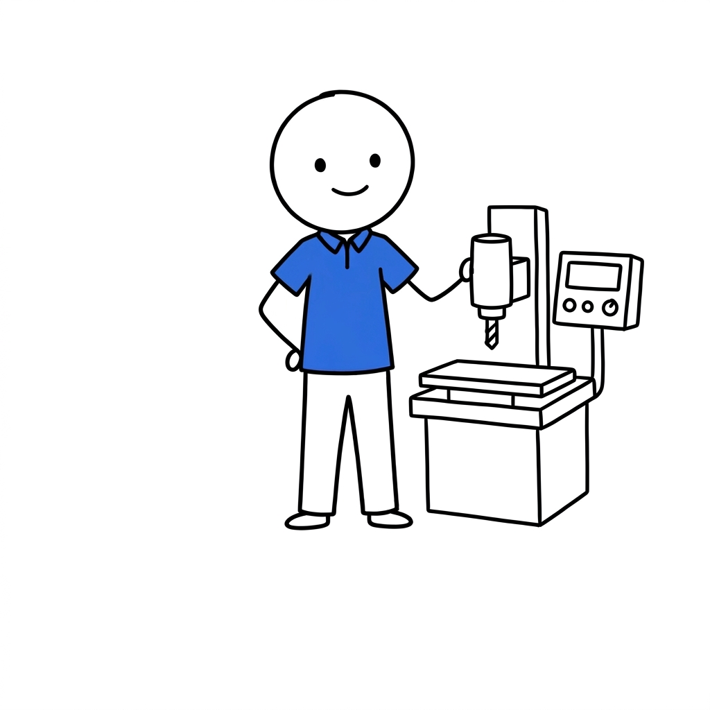

AI for manufacturing pros.
No code. No theory.
Real workflows from a real SEA factory office — quotations, reports, SOPs and negotiations, done in minutes with AI. ↴


Still fighting reports the 2015 way?
Quotations that take 3 days. RCA reports the customer sends back. SOPs nobody has time to write. Every factory office knows this pain — and every week, AI quietly removes another piece of it. I show you exactly how.
What you get here
Written for planners, QC execs, purchasers and BD managers — never for programmers.

AI, minus the jargon
LLMs, tokens, MCP — explained the way a colleague would at the mamak, not a textbook.

Real factory workflows
Step-by-step builds from a working CNC manufacturing office — quotations, WIP reports, supplier emails.

Leave on time
The end goal is not "AI skills". It is going home at 6 with the reports already done.
Fresh from the office
23 articles and counting — all free to read.
How One Johor Manufacturer Cut Quotation Time by 70% Using AI
read this →How to Write Any Manufacturing SOP in 30 Minutes Using AI
read this →How One BD Manager Turned 334,000 Rows of Factory Data Into a Growth Strategy
read this →What Is an LLM? The Engine Behind Every AI Tool You Use
read this →How to Write an RCA Report Your Customer Won't Send Back
read this →How I Connected AI to My Company Outlook in 60 Minutes
read this →More from the office

I don't just show you. I hand you the workflow. PLUG &
PLAY
The articles prove what is possible. The Plug & Play workflows give you the exact prompts, the templates, and the step-by-step to run it in your own office. Pay once. Use forever.

You've seen what AI does in a real factory office.
I teach manufacturing pros to USE AI.
Real prompts. Real workflows. Real factory wins.
Get your first workflow — USD 9.99.
First workflow drops soon: the Quotation Workflow. Follow @the.industrial.scribe to catch the launch.